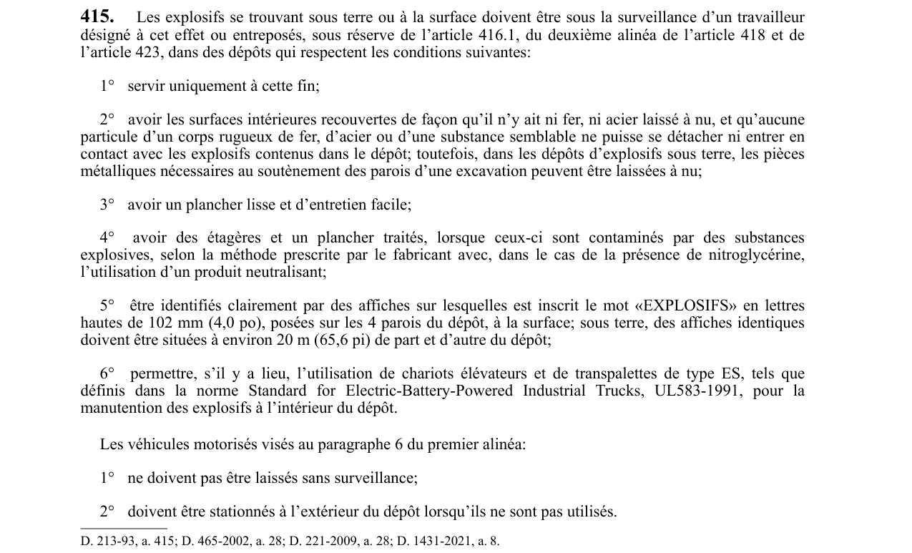

art-415-RSSM : explosifs trouvant terre surface surveillance
Les explosifs se trouvant sous terre ou à la surface doivent être sous la surveillance d’un travailleur désigné à cet effet ou entreposés, sous réserve de l’article 416.1, du deuxième alinéa de l’article 418 et de l’article 423, dans des dépôts qui respectent les conditions suivantes: 1° servir uniquement à cette fin; 2° avoir les surfaces intérieures recouvertes de façon qu’il n’y ait ni fer, ni acier laissé à nu, et qu’aucune particule d’un corps rugueux de fer, d’acier ou d’une substance semblable ne puisse se détacher ni entrer en contact avec les explosifs contenus dans le dépôt; toutefois, dans les dépôts d’explosifs sous terre, les pièces métalliques nécessaires au soutènement des parois d’une excavation peuvent être laissées à nu; 3° avoir un plancher lisse et d’entretien facile; 4° avoir des étagères et un plancher traités, lorsque ceux-ci sont contaminés par des substances explosives, selon la méthode prescrite par le fabricant avec, dans le cas de la présence de nitroglycérine, l’utilisation d’un produit neutralisant; 5° être identifiés clairement par des affiches sur lesquelles est inscrit le mot «EXPLOSIFS» en lettres hautes de 102 mm (4,0 po), posées sur les 4 parois du dépôt, à la surface; sous terre, des affiches identiques doivent être situées à environ 20 m (65,6 pi) de part et d’autre du dépôt; 6° permettre, s’il y a lieu, l’utilisation de chariots élévateurs et de transpalettes de type ES, tels que définis dans la norme Standard for Electric-Battery-Powered Industrial Trucks, UL583-1991, pour la manutention des explosifs à l’intérieur du dépôt. Cette obligation vise l'employeur.
- Les véhicules motorisés visés au paragraphe 6 du premier alinéa: 1° ne doivent pas être laissés sans surveillance; 2° doivent être stationnés à l’exté
🌐 LegisQuébec · 📄 PDF officiel
Texte officiel : capture du PDF

Toucher l'image pour l'agrandir🔗 Voir art. 415 RSSM dans le PDF (page 106)
Version : texte officiel du RSSM (RLRQ c. S-2.1, r. 14), à jour au 1er mai 2024 — Éditeur officiel du Québec
Voir aussi
- art. 414 : intérieur dépôt explosifs conservés contenant · obligation : à l’intérieur d’un dépôt d’explosifs, les explosifs doivent être conservés dans leur contenant d’origine.
- art. 416 : dépôt explosifs surface situé tableau · obligation : un dépôt d’explosifs à la surface doit: 1° être situé conformément au tableau des distances de l’annexe IV; 2° être éloigné d’une…
- ⚖️ Loi habilitante : LSST
- ↑ Index du bloc : Travaux à ciel ouvert et explosifs
Pages qui pointent ici (4)
- art-414-RSSM : intérieur dépôt explosifs conservés contenant Recueil législatif
- art-416-RSSM : dépôt explosifs surface situé tableau Recueil législatif
- art-417-RSSM : Malgré coffre utilisé entreposer explosifs Recueil législatif
- RSSM : Travaux à ciel ouvert et explosifs (art. 401 à 475) Recueil législatif